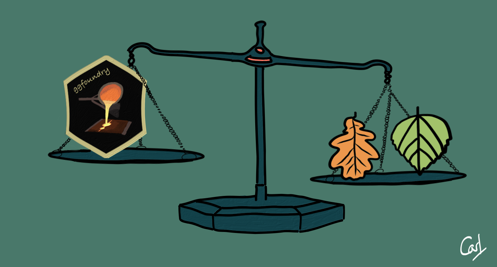
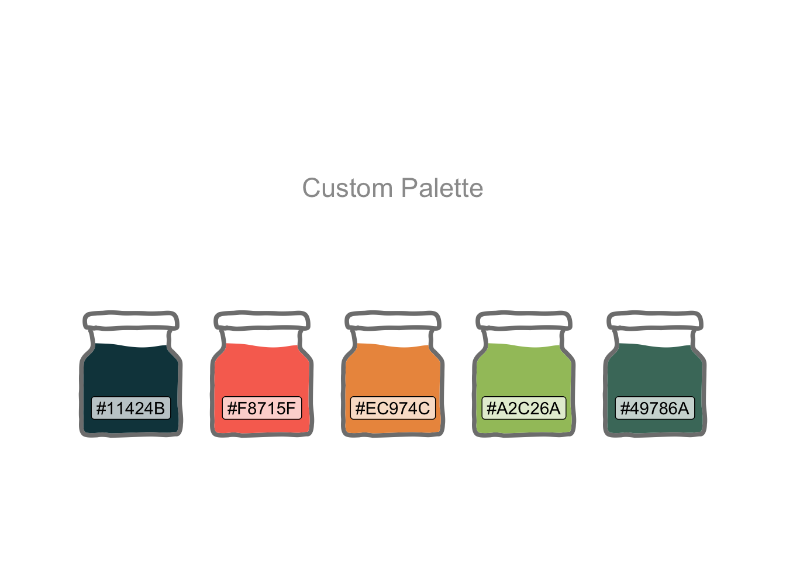
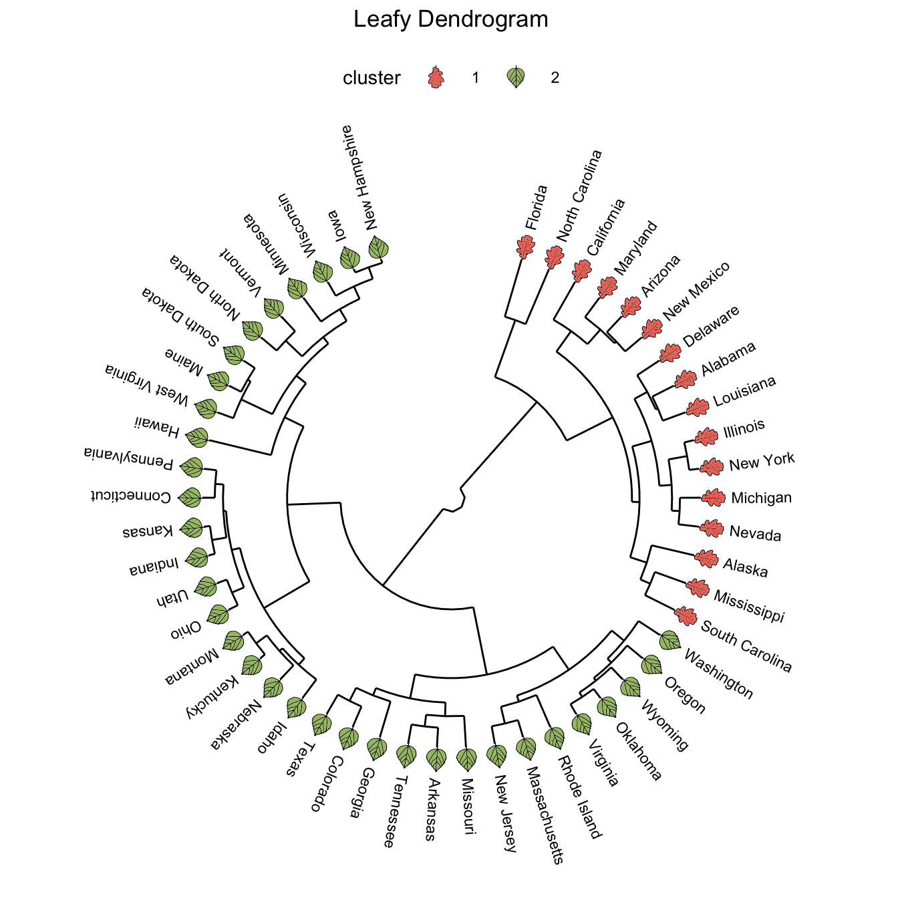
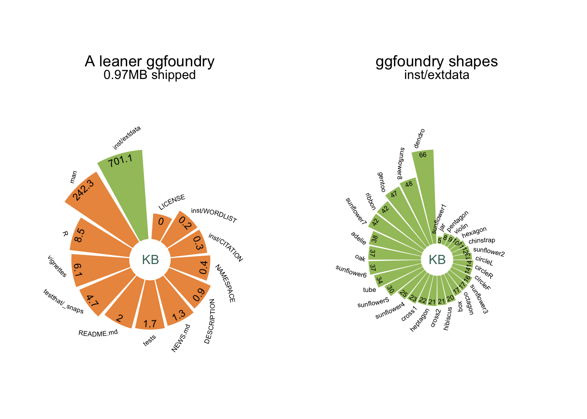

ggfoundry 0.3.1

ggfoundry offers arbitrary colourable and fillable shapes for ggplot2. A showcase of examples, how it compares to other approaches and a list of available shapes, are all covered on the package website.
The theme of ggfoundry 0.3.1:
Outwardly focuses on adding fillable leaves to dendrograms; rotatable when using polar coordinates.
Inwardly prioritises a leaner shipped package to provide more headroom for new shapes.
Leafier
ggfoundry’s display_palette() presents the loaded palette in paint pots.
pal_name <- "Custom Palette"
pal <- c("#11424B", "#F8715F", "#EC974C", "#A2C26A", "#49786A")
display_palette(pal, pal_name)
Fillable leaves can enhance the visual impact of a dendrogram and help draw attention to particular clusters.
geom_casting() plots a shape and fill for each cluster with the appropriate coordinates and angles. scale_shape_manual() specifies the chosen shapes.
data <- hclust(dist(USArrests), "ave") |>
dendro_data(type = "rectangle")
cluster <- hclust(dist(USArrests), "ave") |>
cutree(k = 2) |>
as_tibble(rownames = "label") |>
mutate(cluster = factor(value), .keep = "unused")
num_leaves <- nrow(data$labels)
offset <- 15 # Degrees by which the first branch is rotated
from <- 90 - offset # First text label
by <- -(360 - (2 * offset)) / (num_leaves - 1) # Degrees between labels
leaves <- data$labels |>
mutate(
angle = seq(from = from, by = by, length.out = num_leaves),
shape_angle = seq(from + 90, by = by, length.out = num_leaves),
) |>
left_join(cluster, join_by(label))
ggplot() +
geom_segment(
aes(x = x, y = y, xend = xend, yend = yend),
data = segment(data)
) +
geom_text(
aes(x = x, y = y, label = label, angle = angle),
size = 3, hjust = 0, nudge_y = 20, data = leaves
) +
geom_casting(
aes(x, y, angle = shape_angle, group = x, fill = cluster, shape = cluster),
vjust = 0.7, size = 0.08, data = leaves
) +
scale_y_reverse() +
scale_fill_manual(values = c(pal[2], pal[4])) +
scale_shape_manual(values = c("oak", "hibiscus")) +
labs(title = "Leafy Dendrogram") +
coord_radial() +
theme_dendro() +
theme(
plot.title = element_text(hjust = 0.5),
legend.key.size = unit(2, "line"),
legend.position = "top"
)
Two leaf types are currently supported: Hibiscus and oak. More could be added if needed.
Leaner
A reduction of >2MB in the shipped package size was achieved by:
- Moving supplementary documentation (with plots) from vignettes to articles;
- Switching snapshot tests from
pngfiles to ggplot layer data; - Running the
svg-to-Pictureconversion at build time.
Converting vignettes to articles is an easy win by moving them to a vignettes/articles sub-folder and ensuring .Rbuildignore contains ^vignettes/articles$ (it will already do so if usethis::use_article has been run). There’s also the potential to remove Suggests from the DESCRIPTION file if packages are now only used in articles.
Snapshot tests are a wonderful addition to testthat. The test takes a snapshot of something complex. The next time the test is run, if the output has changed, there’s an option to accept the change (if intentional) or fix it (if unintentional). Switching to snapshots of ggplot2::layer_data is lighter and png-free.
The R Packages book has a section understand when code is executed and advises carefully reviewing any code outside of a function. On-build does feel like the best time to make the svg-to-Picture conversion. Doing it outside of the package increases the shipped size. Doing it inside the plotting function affects performance. Doing it .onLoad() introduces a small (couple of seconds) delay in package load time.
package <- "ggfoundry"
build_ignore <- read_lines(str_c("~/", package, "/.Rbuildignore")) |>
str_remove("\\$") |>
str_c(collapse = "|")
df <-
list.files(str_c("~/", package), recursive = TRUE, full.names = TRUE) |>
map(file.info) |>
bind_rows() |>
as_tibble(rownames = "path") |>
select(path, size) |>
mutate(
path = str_extract(path, str_c("(?<=", package, "/).*")),
type = if_else(str_detect(path, build_ignore), "ignored", "shipped"),
) |>
separate_wider_delim(
path,
delim = "/",
names = c("lvl1", "lvl2", "lvl3", "lvl4", "lvl5"),
too_few = "align_start",
too_many = "drop",
cols_remove = FALSE
)
shipped_df <- df |>
mutate(across(starts_with("lvl"), \(x) case_when(
lvl3 %in% c("_snaps") ~ str_c(lvl2, "/", lvl3),
lvl1 %in% c("inst") ~ str_c(lvl1, "/", lvl2),
.default = x
))) |>
summarise(size = sum(size), .by = c(lvl1, type)) |>
arrange(type, desc(size)) |>
filter(type == "shipped")
ship_size <- shipped_df |>
summarise(size = sum(size)) |>
pull()
theme_spiral <-
theme_void() +
theme(
plot.title = element_text(hjust = 0.5),
plot.subtitle = element_text(hjust = 0.5, margin = margin(0, 0, 30, 0)),
plot.margin = unit(c(1, 0, 0, 0), "cm"),
legend.position = "none"
)
p1 <- shipped_df |>
ggplot(aes(fct_reorder(lvl1, size), size)) +
geom_col(aes(fill = if_else(lvl1 == "inst/extdata", pal[4], pal[3]))) +
geom_textpath(
aes(label = lvl1), size = 2,
offset = unit(-10, "pt"), angle = -40, hjust = 1
) +
geom_textpath(
aes(label = glue("{round(size / 1e3, 1)}")),
vjust = 0, size = 3,
) +
annotate("text", 0.5, 0.5, label = "KB", vjust = 2.2, colour = pal[5]) +
scale_y_log10() +
scale_fill_identity() +
labs(
title = glue("A leaner {package}"),
subtitle = glue("{round(ship_size / 1e6, 2)}MB shipped")
) +
coord_radial(inner.radius = 0.1) +
theme_spiral
p2 <- df |>
filter(lvl2 == "extdata") |>
mutate(shape = str_extract(lvl3, "(?<=-).*(?=_)")) |>
summarise(size = sum(size), .by = shape) |>
ggplot(aes(fct_reorder(shape, size), size)) +
geom_col(fill = pal[4]) +
geom_textpath(
aes(label = shape), size = 2,
offset = unit(-10, "pt"), angle = -70, hjust = 1
) +
geom_textpath(
aes(label = glue("{round(size / 1e3, 0)}")),
vjust = 0, size = 2,
) +
annotate("text", 0.5, 0.5, label = "KB", vjust = 2.2, colour = pal[5]) +
labs(
title = glue("{package} shapes"),
subtitle = "inst/extdata"
) +
coord_radial(inner.radius = 0.1) +
theme_spiral
p1 + p2
Overall, the 0.97MB shipped is comfortably within the <10MB CRAN policy (5 data + 5 documentation) and leaves plenty of scope to grow.
The shapes are the biggest contributor: inst/extdata contains the 28 pairs of svg files (outline and fill). But each pair is relatively small, ranging from 5 to 66KB determined by shape complexity: The baby dendrogram being the most complex.